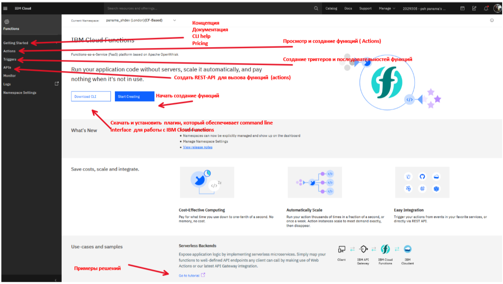
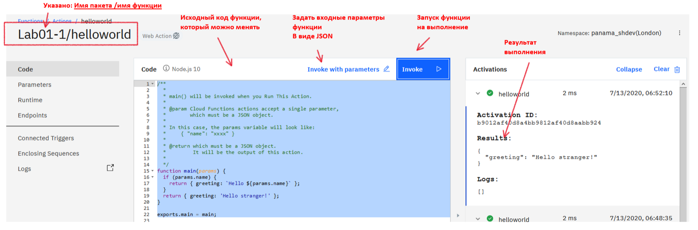
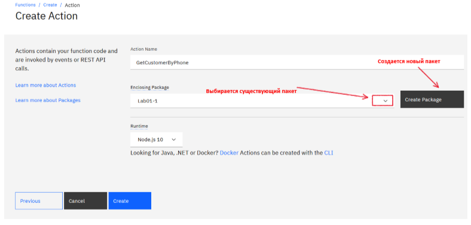
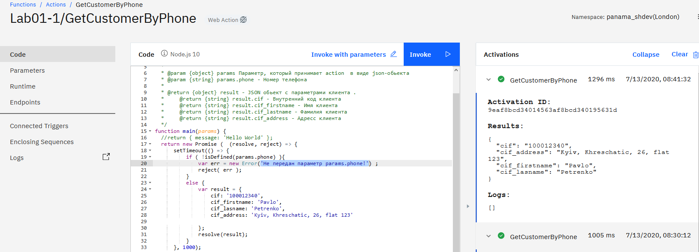
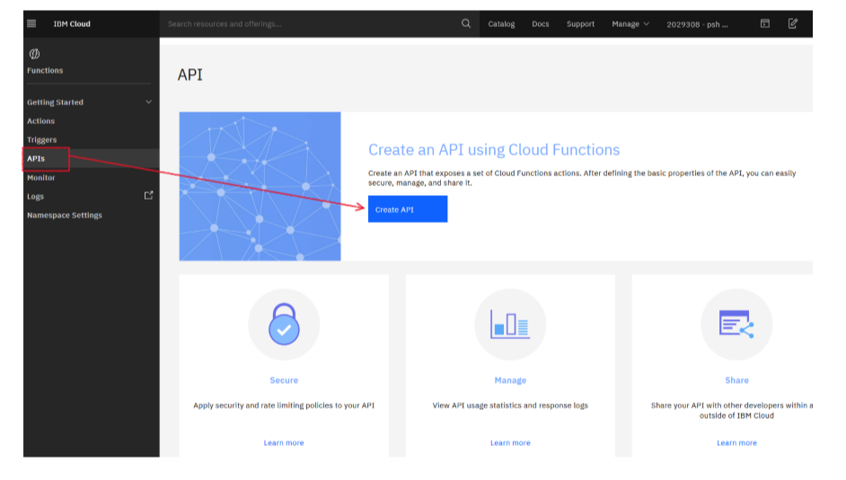
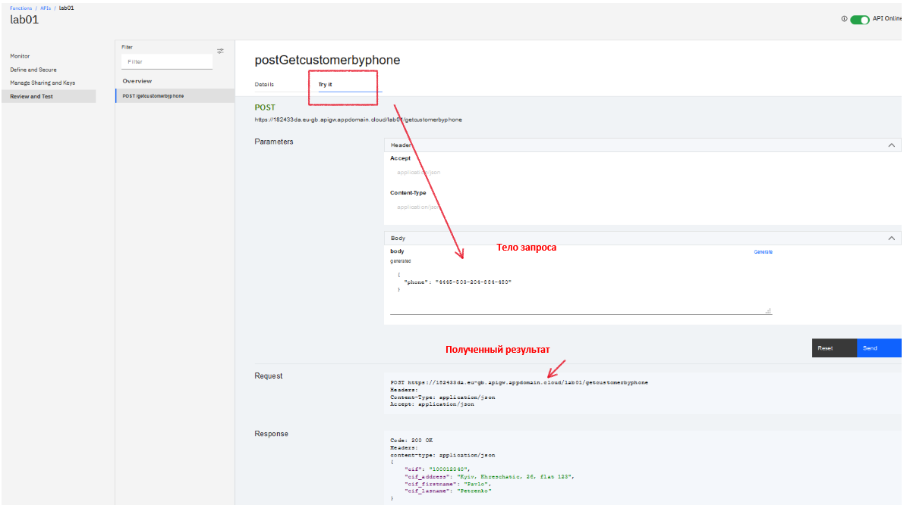

В данной лабораторной работе ознакомимся с IBM Cloud Dashboard по созданию IBM Cloud Functions.
Если зайти в IBM Cloud Dashboard, то IBM Cloud Functions становятся сразу доступными. На pic-1 показано, где можно найти их.
pic-1
В результате нажатия на пиктограмму переходим в главную консоль IBM Cloud Functions. На pic-2 показаны основные элементы управления, необходимые для создания функций.

pic-2
Нажав на кнопку "Start Creating" попадаем в главный экран по созданию функций (pic-3).

pic-3
На данном скриншоте показано все многообразие возможностей по созданию функций.
Для этого нужно опять войти "Start Creating", выбать "From Template" и выберем "Hello World" (pic-4).

pic-4
После успешного создания попадем в окно с исходным кодом функции (pic-5).

pic-5
В данном примере, при нажатии на кнопку "Invoke", выполняется запуск функции и результаты работы функции увидим в правой части окна. Параметров в функцию не передавалось, поэтому увидим ответ:
{
"greeting": "Hello stranger!"
}
Теперь по кнопке: "Invoke with parameters" зададим параметры запуска функции. Параметры задаются в виде плоского JSON файла. Ниже паказан пример json параметров.
{ "name": "Jim",
"phone": "222-33-44",
"id": 1234567
}
Данные этого json нужно вставить в окно ввода параметров и повторить вызов.

pic-6
В этом случае ответ уже изменился, и мы получили в ответе "Hello Jim", т.е. параметр "name" был прочитан
{
"greeting": "Hello Jim"
}
Перейдем к списку "Actions". Мы увидим только одну функцию helloworld пакете Lab01-1 (pic-7). Для создания своей функции,

pic-7
Для создания собственной функции нужно нажать кнопку "Create" и выбрать опцию "Action" (pic-8).

pic-8
Для создания своей функции нужно:
внести имя Action, например: "GetCustomerByPhone";
выбрать имя существующего пакета, или создать новый;
нажать "Create".
На (pic-9) показано заполненное окно ввода. 
pic-9
Нажав кнопку "Create", получим шаблон для написания своего исходного кода (pic-10).

pic-10
Для написания своей функции (action), придумаем абстрактную задачу. Разработать асинхронную функцию, которая по номеру телефона возвратит данные клиента.
На вход функция принимает json объект:
{"phone": "222-33-44"}
В случае успешного выполнения, функция возвращает json-обьект:
{
"cif": "100012340",
"cif_address": "Kyiv, Khreschatic, 26, flat 123",
"cif_firstname": "Pavlo",
"cif_lasname": "Petrenko"
}
В случае, если телефон не передан, функция генерирует ошибку с сообщением: "Не передан параметр params.phone!"
Исходный код функции находится в файле: /LAB-1/GetCustomerByPhone.js Исходный код необходимо вставить в окно браузера. В "Invoke with parameters" необходимо вставить json с параметрами запуска
{"phone": "222-33-44"}
и запустить на выполнение по кнопке "Invoke". В результате увидим экран как на pic-11.

pic-11
Функция работает. Теперь необходимо ее настроить в качестве REST API для публичного использования.
Для этого необходимо

pic-12

pic-13

pic-14

pic-15
В результате выполнения шагов мы получим экран мониторинга и управления API (pic-16).

pic-16
Зайдя в меню review and test, выберите вкладку try it, введите параметры запроса и запустите на выполнение. Результат показан на pic-17.

pic-17